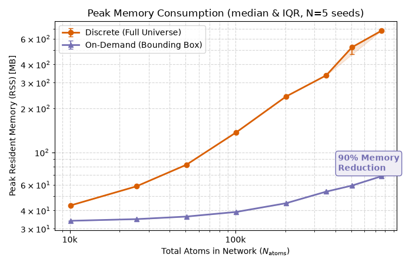
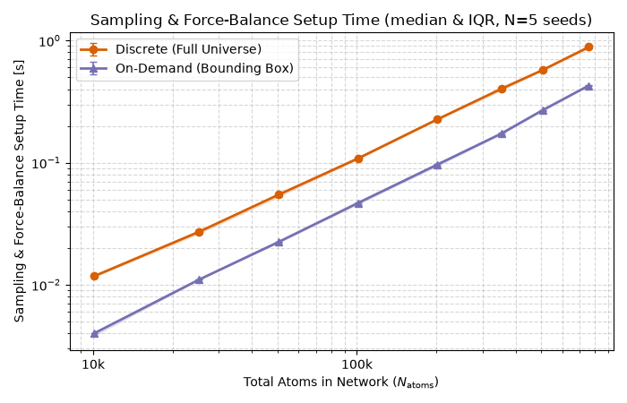
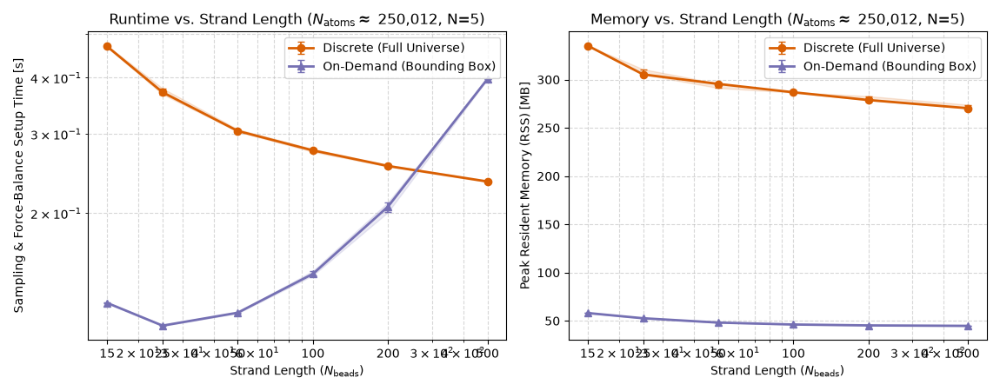
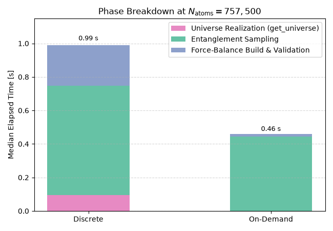
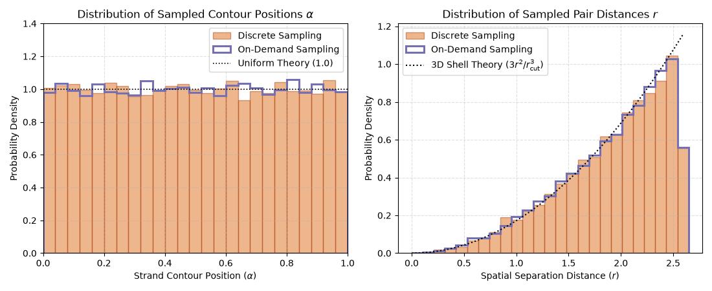
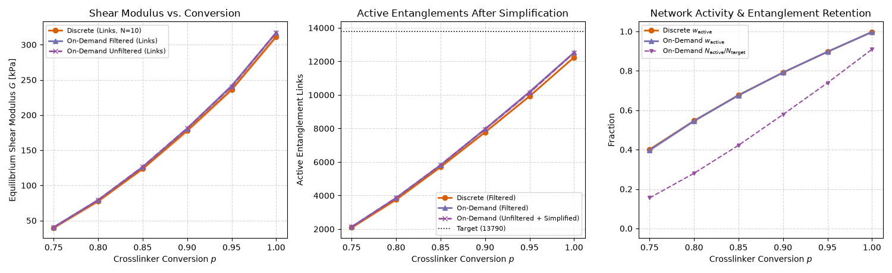

Note
Go to the end to download the full example code.
Entanglement Sampling Methods¶
In polymer network elasticity simulations using the Maximum Entropy Homogenization Procedure (MEHP) and Force Balance (Gusev [Gus19], Bernhard and Gusev [BG25]), entanglements are represented as localized topological constraints (entanglement links or springs).
Historically, sampling entanglements required instantiating the complete bead-spring
Universe (get_universe())
with 3D coordinates for every single bead along every strand. Networks with hundreds of thousands
or millions of beads require gigabytes of RAM just to store atom tables, neighbor lists, and graph
structures that are immediately discarded once the network is mapped into Hookean springs.
To eliminate this memory wall while retaining exact bead-level physics, pylimer-tools provides
two complementary sampling methods:
On-Demand Bounding-Box Method (
sample_entanglements()orrandomly_sample_entanglements_on_demand()): Samples each strand once upfront using deterministic seeds to compute its 3D bounding box (AABB), storing only 6 floats + seed per strand (\(O(N_{\text{strands}})\) memory). During entanglement detection, periodic neighbor lists on bounding-box centroids cull non-overlapping strands with >99% efficiency; candidate strands regenerate explicit beads on demand into a bead-budgeted LRU cache. This achieves physical bead-level fidelity identical to discrete sampling while scaling linearly with system size at a fraction of the RAM.Discrete Method (
Universe+randomly_sample_entanglements()): Generates explicit 3D coordinates for all beads in the system upfront. Useful when downstream MD/DPD simulations also require the full 3D atom configuration, at the cost of \(O(N_{\text{atoms}})\) memory.
Both methods support topological leaf peeling (filtering_mode=EntanglementFilteringMode.OMIT_INACTIVE
or PRUNE_UPFRONT), discarding candidate links involving dangling chains or soluble molecules.
from pathlib import Path
import sys
if "__file__" in globals():
_examples_dir = str(Path(__file__).resolve().parents[1])
_fb_dir = str(Path(__file__).resolve().parent)
for _p in (_examples_dir, _fb_dir):
if _p not in sys.path:
sys.path.insert(0, _p)
from _example_cache import ( # noqa: E402
format_benchmark_footnote,
get_example_cache_path,
load_or_compute_cache,
)
from _plotting import ( # noqa: E402
plot_sampling_conversion_sweep,
plot_sampling_distributions,
plot_sampling_memory_scaling,
plot_sampling_phase_breakdown,
plot_sampling_runtime_scaling,
plot_sampling_strand_length_scaling,
)
from _study_runners import run_all_benchmarks # noqa: E402
import pylimer_tools_cpp as pt # noqa: E402
Minimal Usage: On-Demand vs. Discrete Sampling¶
On-demand sampling is the default on MCUniverseGenerator and
avoids allocating the full Universe when only the
MEHPSimulator modulus is needed.
Below we build a small PDMS-like network and run both paths side by side.
Multi-seed scaling and ensemble plots in the following sections load precomputed
benchmark data (recomputable via --recompute or
PYLIMER_RECOMPUTE_CACHE=1).
gen = pt.MCUniverseGenerator(18.0, 18.0, 18.0)
gen.set_seed(42)
gen.config_nr_of_mc_steps(0)
gen.set_mean_squared_bead_distance(1.0)
gen.add_strands(200, [50] * 200)
gen.add_crosslinkers(100, 4)
gen.link_strands_to_conversion(0.92)
linear_cfg = pt.MEHPLinearSolverConfig()
linear_cfg.simplification_mode = pt.StructureSimplificationMode.INACTIVE_THEN_X2F
# 1. On-demand (Universe-free, O(N_strands) memory)
es_od = gen.sample_entanglements(
nr_of_entanglements_to_sample=300,
upper_cutoff=2.6,
seed="demo",
filtering_mode=pt.EntanglementFilteringMode.OMIT_INACTIVE,
)
fb_od = gen.get_mehp_simulator(
es_od, entanglement_mode=pt.EntanglementMode.MERGED_LINKS
)
fb_od.run(linear_cfg)
# 2. Discrete (explicit Universe, O(N_atoms) memory)
universe = gen.get_universe()
ents_disc = pt.randomly_sample_entanglements(
universe,
nr_of_samples=300,
upper_cutoff=2.6,
seed="demo",
filtering_mode=pt.EntanglementFilteringMode.OMIT_INACTIVE,
)
fb_disc = pt.MEHPSimulator(
universe, ents_disc, entanglement_mode=pt.EntanglementMode.MERGED_LINKS
)
fb_disc.run(linear_cfg)
print(f"On-demand links: {len(es_od)}, Discrete links: {len(ents_disc.pairs_of_atoms)}")
cache_path = get_example_cache_path(
"entanglement_sampling_comparison_cache.npz", "force_balance"
)
data = load_or_compute_cache(cache_path, run_all_benchmarks)
On-demand links: 226, Discrete links: 234
Loading cached example data from entanglement_sampling_comparison_cache.npz...
Memory Footprint & Runtime Scaling¶
Explicit bead generation inflates peak resident memory (RSS) due to bead coordinate arrays, neighbor search structures, and igraph graphs. On-demand bounding-box sampling keeps memory nearly flat while also running faster on large networks.


Strand-Length Scaling & Phase Breakdown¶
At fixed total atom count, varying strand length \(N_{\text{beads}}\) shifts the balance
between \(O(N_{\text{strands}})\) and \(O(N_{\text{atoms}})\) work. The phase breakdown
isolates where discrete sampling spends its time (get_universe,
sampling, and graph build).


Conformational Distributions (\(\alpha\) and \(r\))¶
Because on-demand sampling regenerates exact discrete bead paths inside candidate bounding boxes, both contour positions \(\alpha\) (uniform) and spatial pair separations \(r\) (\(\propto r^2\)) match discrete sampling.
plot_sampling_distributions(data)

Defective Networks Across Conversion (\(p \in [0.75, 1.00]\))¶
Below full conversion, dangling chains and sol fractions must be handled consistently:
EntanglementFilteringMode.OMIT_INACTIVEdiscards candidate pairs on dangling/soluble strands upfront.EntanglementFilteringMode.NONEpaired withINACTIVE_THEN_X2Fprunes zero-force links during relaxation, recovering the same plateau modulus \(G(p)\) (with slightly higher effective entanglement density when nominal \(N_{\text{ent}}\) is fixed per total volume).
plot_sampling_conversion_sweep(data)

Benchmark Hardware¶
Note
The cached memory and runtime benchmarks above were recorded on the hardware reported below.
print(format_benchmark_footnote(data))
Measured on: Apple M3 Pro (12 cores), 36 GB RAM, Mac15,7, macOS 27.2.1 (arm64), Python 3.13.18 (cached 2026-11-17).
Total running time of the script: (0 minutes 1.069 seconds)